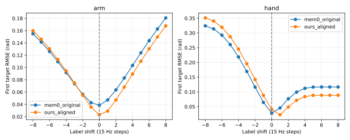
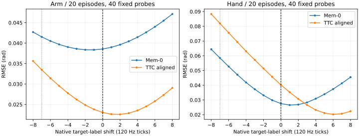

所有行均为 diagnostic，独立于正式 v1.1 主表；original-contact 为纯物理对照，其余附着行均标记 assisted。训练侧缩放、raw RGB 修复、原场景和 seed、300 秒时限保持一致。完整格子报告成功数；未闭合格子只报进度，不将未核验终态推断为失败。
固定前50个均衡场景为 scene 0–24 与 50–74（正反各25）。V6 在离开支撑面后连续30 tick稳定才附着，保留手指碰撞与原生32次迭代；手张开或间距增大即释放。target-only-stop 额外取消邻杯倾倒终止，作为另一项物理变体单列。
v1.1、v1.2 的平均阶段按10个有序事件计；v1.3 按5只“称量后放回原垫”的不同杯子计。v1.3 不会把开局就在垫上的杯子计完成。h2 Mem-0 前13条来自共享开发卡 N1×4，其余迁到独立低优 N1×10，拓扑差异已列明。
每格依次为v1.1 / v1.2 / v1.3成功数，完整分母为50；unknown保留在分母内。每行三种方法使用同一条件。辅助条件、不同释放版本和纯物理分别列出，方法比较仅在同一行内进行。完整表还保留未通过准入或停止的版本。
| 设置 | Mem-0 | TTC 对齐 | TTC 对齐削弱 #26 |
|---|---|---|---|
| 原始接触 · h2 | 0/0/0，各/50；U0 | 0/0/0，各/50；U0 | 0/0/0，各/50；U0 |
| 稳定抓取附着 · h2 | 2/3/3，各/50；U0 | 0/0/0，各/50；U0 | 0/0/0，各/50；U0 |
| 稳定抓取附着 · h4 | 1/2/2，各/50；U0 | 0/0/0，各/50；U0 | 0/0/0，各/50；U0 |
| 保持实测手指 · h4 | 2/2/2，各/50；U0 | 0/0/0，各/50；U0 | 0/0/0，各/50；U0 |
| 保持实测手指 · h2 | 1/1/1，各/50；U0 | 0/0/0，各/50；U0 | 0/0/0，各/50；U0 |
| 保持实测手指v1＋限速 · h4（有释放限制） | 0/1/1，各/50；U0 | 1/1/1，各/50；U0 | 0/0/0，各/50；U0 |
| 保持已下发手指目标 · h4 | 0/0/0，各/50；U0 | 0/0/0，各/50；U0 | 0/0/0，各/50；U0 |
| 保持已下发目标＋限速 · h4 | 2/2/2，各/50；U0 | 0/0/0，各/50；U0 | 0/0/0，各/50；U0 |
| 保持已下发目标＋限速 · h2 | 2/2/2，各/50；U0 | 0/0/0，各/50；U0 | 0/0/0，各/50；U0 |
| 相对释放映射＋限速 · h4 | 1/1/1，各/50；U0 | 0/0/0，各/50；U0 | 0/0/0，各/50；U0 |
| 8tick名义绝对目标释放插值＋限速 · h4 | 0/0/0，各/50；U0 | 0/0/0，各/50；U0 | 0/0/0，各/50；U0 |
expert-slew 为独立推理侧变体：按10条固定专家指令的逐关节速度/加速度最大值乘1.25并向上取整，参数在策略评测前冻结。三种方法共用同一函数；专家26,083个端点经该函数后逐位不变，复用既有专家回放证据，不冒称重新跑过物理回放。模型原始端点与实际下发端点同时保留。最初不保持手指目标的 stable30+限速分支随后触发固定关节约束异常并停止；它不计算完整成功率。后续“保持实测角度＋限速”和“保持已下发目标＋限速”均另列版本。
C8+E 为更强辅助：允许支撑面上双指接触稳定8 tick后附着，手部实际闭合门槛2.55；原生32迭代与手指碰撞保留。专家仅通过v1.3（10/10），v1.1为1/10，因此不能用于正式v1.1主表。日志监控目标由上一tick的已记录阶段精确推导，每tick校验在线/离线阶段一致；另用17条含原字段的轨迹核对67,229 tick和18次切换，无差异。原始日志不改写。
expanded100为Mem-0后续扩展，包含原有first50；不与first50相加或混合作独立样本。


| 变体 / 方法 / h | 进度 | 口径 | 成功数 | 平均阶段 [bootstrap95%] | 半任务 | 正 / 反 成功 | U |
|---|---|---|---|---|---|---|---|
| stable30-h4 / Mem-0 / h4 | 50/50 | placement-v1.1 | 1/50 | 2.340 [1.700, 3.040] | 11/50 | 1/25 · 0/25 | 0 |
| stable30-h4 / Mem-0 / h4 | 50/50 | SafeLab-Eval-v1.2-relaxed | 2/50 | 2.900 [2.220, 3.640] | 12/50 | 1/25 · 1/25 | 0 |
| stable30-h4 / Mem-0 / h4 | 50/50 | SafeLab-Eval-v1.3-lenient | 2/50 | 1.380 [1.040, 1.760] | 9/50 | 1/25 · 1/25 | 0 |
| stable30-h4 / TTC · 对齐loss / h4 | 50/50 | placement-v1.1 | 0/50 | 1.300 [0.920, 1.720] | 1/50 | 0/25 · 0/25 | 0 |
| stable30-h4 / TTC · 对齐loss / h4 | 50/50 | SafeLab-Eval-v1.2-relaxed | 0/50 | 1.620 [1.220, 2.060] | 2/50 | 0/25 · 0/25 | 0 |
| stable30-h4 / TTC · 对齐loss / h4 | 50/50 | SafeLab-Eval-v1.3-lenient | 0/50 | 0.580 [0.380, 0.800] | 1/50 | 0/25 · 0/25 | 0 |
| stable30-h4 / TTC · 对齐削弱版 / h4 | 50/50 | placement-v1.1 | 0/50 | 1.200 [1.000, 1.400] | 0/50 | 0/25 · 0/25 | 0 |
| stable30-h4 / TTC · 对齐削弱版 / h4 | 50/50 | SafeLab-Eval-v1.2-relaxed | 0/50 | 1.500 [1.260, 1.760] | 0/50 | 0/25 · 0/25 | 0 |
| stable30-h4 / TTC · 对齐削弱版 / h4 | 50/50 | SafeLab-Eval-v1.3-lenient | 0/50 | 0.600 [0.440, 0.760] | 0/50 | 0/25 · 0/25 | 0 |
| stable30-h8 / Mem-0 / h8 | 50/50 | placement-v1.1 | 0/50 | 1.776 [1.286, 2.306] | 8/50 | 0/25 · 0/25 | 1 |
| stable30-h8 / Mem-0 / h8 | 50/50 | SafeLab-Eval-v1.2-relaxed | 0/50 | 2.265 [1.694, 2.878] | 8/50 | 0/25 · 0/25 | 1 |
| stable30-h8 / Mem-0 / h8 | 50/50 | SafeLab-Eval-v1.3-lenient | 0/50 | 1.122 [0.837, 1.429] | 6/50 | 0/25 · 0/25 | 1 |
| stable30-h8 / TTC · 对齐loss / h8 | 50/50 | placement-v1.1 | 0/50 | 1.100 [0.860, 1.360] | 0/50 | 0/25 · 0/25 | 0 |
| stable30-h8 / TTC · 对齐loss / h8 | 50/50 | SafeLab-Eval-v1.2-relaxed | 0/50 | 1.460 [1.180, 1.740] | 0/50 | 0/25 · 0/25 | 0 |
| stable30-h8 / TTC · 对齐loss / h8 | 50/50 | SafeLab-Eval-v1.3-lenient | 0/50 | 0.540 [0.380, 0.700] | 0/50 | 0/25 · 0/25 | 0 |
| stable30-h8 / TTC · 对齐削弱版 / h8 | 50/50 | placement-v1.1 | 0/50 | 1.320 [0.940, 1.780] | 3/50 | 0/25 · 0/25 | 0 |
| stable30-h8 / TTC · 对齐削弱版 / h8 | 50/50 | SafeLab-Eval-v1.2-relaxed | 0/50 | 1.540 [1.140, 2.000] | 3/50 | 0/25 · 0/25 | 0 |
| stable30-h8 / TTC · 对齐削弱版 / h8 | 50/50 | SafeLab-Eval-v1.3-lenient | 0/50 | 0.560 [0.340, 0.800] | 2/50 | 0/25 · 0/25 | 0 |
| target-only-stop-h4 / Mem-0 / h4 | 50/50 | placement-v1.1 | 0/50 | 1.960 [1.460, 2.520] | 6/50 | 0/25 · 0/25 | 0 |
| target-only-stop-h4 / Mem-0 / h4 | 50/50 | SafeLab-Eval-v1.2-relaxed | 2/50 | 2.540 [1.940, 3.220] | 8/50 | 2/25 · 0/25 | 0 |
| target-only-stop-h4 / Mem-0 / h4 | 50/50 | SafeLab-Eval-v1.3-lenient | 2/50 | 1.240 [0.940, 1.580] | 7/50 | 2/25 · 0/25 | 0 |
| target-only-stop-h4 / TTC · 对齐loss / h4 | 50/50 | placement-v1.1 | 0/50 | 1.240 [0.880, 1.640] | 1/50 | 0/25 · 0/25 | 0 |
| target-only-stop-h4 / TTC · 对齐loss / h4 | 50/50 | SafeLab-Eval-v1.2-relaxed | 0/50 | 1.360 [1.000, 1.760] | 1/50 | 0/25 · 0/25 | 0 |
| target-only-stop-h4 / TTC · 对齐loss / h4 | 50/50 | SafeLab-Eval-v1.3-lenient | 0/50 | 0.500 [0.320, 0.720] | 1/50 | 0/25 · 0/25 | 0 |
| target-only-stop-h4 / TTC · 对齐削弱版 / h4 | 50/50 | placement-v1.1 | 0/50 | 1.100 [0.900, 1.300] | 0/50 | 0/25 · 0/25 | 0 |
| target-only-stop-h4 / TTC · 对齐削弱版 / h4 | 50/50 | SafeLab-Eval-v1.2-relaxed | 0/50 | 1.260 [1.060, 1.480] | 0/50 | 0/25 · 0/25 | 0 |
| target-only-stop-h4 / TTC · 对齐削弱版 / h4 | 50/50 | SafeLab-Eval-v1.3-lenient | 0/50 | 0.560 [0.420, 0.700] | 0/50 | 0/25 · 0/25 | 0 |
| stable30-h2 / Mem-0 / h2 | 50/50 | placement-v1.1 | 2/50 | 2.580 [1.880, 3.340] | 12/50 | 2/25 · 0/25 | 0 |
| stable30-h2 / Mem-0 / h2 | 50/50 | SafeLab-Eval-v1.2-relaxed | 3/50 | 3.180 [2.420, 3.980] | 16/50 | 3/25 · 0/25 | 0 |
| stable30-h2 / Mem-0 / h2 | 50/50 | SafeLab-Eval-v1.3-lenient | 3/50 | 1.520 [1.160, 1.920] | 10/50 | 3/25 · 0/25 | 0 |
| stable30-h2 / TTC · 对齐loss / h2 | 50/50 | placement-v1.1 | 0/50 | 1.420 [1.040, 1.800] | 2/50 | 0/25 · 0/25 | 0 |
| stable30-h2 / TTC · 对齐loss / h2 | 50/50 | SafeLab-Eval-v1.2-relaxed | 0/50 | 1.520 [1.100, 1.940] | 3/50 | 0/25 · 0/25 | 0 |
| stable30-h2 / TTC · 对齐loss / h2 | 50/50 | SafeLab-Eval-v1.3-lenient | 0/50 | 0.580 [0.380, 0.800] | 0/50 | 0/25 · 0/25 | 0 |
| stable30-h2 / TTC · 对齐削弱版 / h2 | 50/50 | placement-v1.1 | 0/50 | 1.200 [1.020, 1.380] | 0/50 | 0/25 · 0/25 | 0 |
| stable30-h2 / TTC · 对齐削弱版 / h2 | 50/50 | SafeLab-Eval-v1.2-relaxed | 0/50 | 1.340 [1.140, 1.540] | 0/50 | 0/25 · 0/25 | 0 |
| stable30-h2 / TTC · 对齐削弱版 / h2 | 50/50 | SafeLab-Eval-v1.3-lenient | 0/50 | 0.600 [0.460, 0.740] | 0/50 | 0/25 · 0/25 | 0 |
| contact8E-h4 / Mem-0 / h4 | 23/50 | placement-v1.1 | 已停止 | 待闭合 | 待闭合 | 待闭合 | 11 |
| contact8E-h4 / Mem-0 / h4 | 23/50 | SafeLab-Eval-v1.2-relaxed | 已停止 | 待闭合 | 待闭合 | 待闭合 | 11 |
| contact8E-h4 / Mem-0 / h4 | 23/50 | SafeLab-Eval-v1.3-lenient | 已停止 | 待闭合 | 待闭合 | 待闭合 | 11 |
| contact8E-h4 / TTC · 对齐loss / h4 | 32/50 | placement-v1.1 | 已停止 | 待闭合 | 待闭合 | 待闭合 | 20 |
| contact8E-h4 / TTC · 对齐loss / h4 | 32/50 | SafeLab-Eval-v1.2-relaxed | 已停止 | 待闭合 | 待闭合 | 待闭合 | 20 |
| contact8E-h4 / TTC · 对齐loss / h4 | 32/50 | SafeLab-Eval-v1.3-lenient | 已停止 | 待闭合 | 待闭合 | 待闭合 | 20 |
| contact8E-h4 / TTC · 对齐削弱版 / h4 | 44/50 | placement-v1.1 | 已停止 | 待闭合 | 待闭合 | 待闭合 | 10 |
| contact8E-h4 / TTC · 对齐削弱版 / h4 | 44/50 | SafeLab-Eval-v1.2-relaxed | 已停止 | 待闭合 | 待闭合 | 待闭合 | 10 |
| contact8E-h4 / TTC · 对齐削弱版 / h4 | 44/50 | SafeLab-Eval-v1.3-lenient | 已停止 | 待闭合 | 待闭合 | 待闭合 | 10 |
| stable30-h4-expanded100 / Mem-0 / h4 | 100/100 | placement-v1.1 | 1/100 | 2.310 [1.890, 2.760] | 19/100 | 1/50 · 0/50 | 0 |
| stable30-h4-expanded100 / Mem-0 / h4 | 100/100 | SafeLab-Eval-v1.2-relaxed | 3/100 | 2.980 [2.500, 3.480] | 27/100 | 2/50 · 1/50 | 0 |
| stable30-h4-expanded100 / Mem-0 / h4 | 100/100 | SafeLab-Eval-v1.3-lenient | 3/100 | 1.420 [1.180, 1.680] | 20/100 | 2/50 · 1/50 | 0 |
| stable30-h2-expanded100 / Mem-0 / h2 | 100/100 | placement-v1.1 | 6/100 | 2.760 [2.250, 3.310] | 25/100 | 6/50 · 0/50 | 0 |
| stable30-h2-expanded100 / Mem-0 / h2 | 100/100 | SafeLab-Eval-v1.2-relaxed | 7/100 | 3.460 [2.900, 4.030] | 33/100 | 7/50 · 0/50 | 0 |
| stable30-h2-expanded100 / Mem-0 / h2 | 100/100 | SafeLab-Eval-v1.3-lenient | 8/100 | 1.650 [1.370, 1.930] | 24/100 | 7/50 · 1/50 | 0 |
| stable30-expert-slew-h4 / Mem-0 / h4 | 20/50 | placement-v1.1 | 已停止 | 待闭合 | 待闭合 | 待闭合 | 11 |
| stable30-expert-slew-h4 / Mem-0 / h4 | 20/50 | SafeLab-Eval-v1.2-relaxed | 已停止 | 待闭合 | 待闭合 | 待闭合 | 11 |
| stable30-expert-slew-h4 / Mem-0 / h4 | 20/50 | SafeLab-Eval-v1.3-lenient | 已停止 | 待闭合 | 待闭合 | 待闭合 | 11 |
| stable30-expert-slew-h4 / TTC · 对齐loss / h4 | 20/50 | placement-v1.1 | 已停止 | 待闭合 | 待闭合 | 待闭合 | 10 |
| stable30-expert-slew-h4 / TTC · 对齐loss / h4 | 20/50 | SafeLab-Eval-v1.2-relaxed | 已停止 | 待闭合 | 待闭合 | 待闭合 | 10 |
| stable30-expert-slew-h4 / TTC · 对齐loss / h4 | 20/50 | SafeLab-Eval-v1.3-lenient | 已停止 | 待闭合 | 待闭合 | 待闭合 | 10 |
| stable30-expert-slew-h4 / TTC · 对齐削弱版 / h4 | 42/50 | placement-v1.1 | 已停止 | 待闭合 | 待闭合 | 待闭合 | 20 |
| stable30-expert-slew-h4 / TTC · 对齐削弱版 / h4 | 42/50 | SafeLab-Eval-v1.2-relaxed | 已停止 | 待闭合 | 待闭合 | 待闭合 | 20 |
| stable30-expert-slew-h4 / TTC · 对齐削弱版 / h4 | 42/50 | SafeLab-Eval-v1.3-lenient | 已停止 | 待闭合 | 待闭合 | 待闭合 | 20 |
| stable30-finger-hold-h4 / Mem-0 / h4 | 50/50 | placement-v1.1 | 2/50 | 2.460 [1.780, 3.200] | 10/50 | 1/25 · 1/25 | 0 |
| stable30-finger-hold-h4 / Mem-0 / h4 | 50/50 | SafeLab-Eval-v1.2-relaxed | 2/50 | 2.860 [2.140, 3.620] | 11/50 | 1/25 · 1/25 | 0 |
| stable30-finger-hold-h4 / Mem-0 / h4 | 50/50 | SafeLab-Eval-v1.3-lenient | 2/50 | 1.340 [0.980, 1.720] | 8/50 | 1/25 · 1/25 | 0 |
| stable30-finger-hold-h4 / TTC · 对齐loss / h4 | 50/50 | placement-v1.1 | 0/50 | 1.340 [0.940, 1.780] | 3/50 | 0/25 · 0/25 | 0 |
| stable30-finger-hold-h4 / TTC · 对齐loss / h4 | 50/50 | SafeLab-Eval-v1.2-relaxed | 0/50 | 1.720 [1.300, 2.180] | 3/50 | 0/25 · 0/25 | 0 |
| stable30-finger-hold-h4 / TTC · 对齐loss / h4 | 50/50 | SafeLab-Eval-v1.3-lenient | 0/50 | 0.600 [0.380, 0.840] | 1/50 | 0/25 · 0/25 | 0 |
| stable30-finger-hold-h4 / TTC · 对齐削弱版 / h4 | 50/50 | placement-v1.1 | 0/50 | 1.200 [1.000, 1.420] | 0/50 | 0/25 · 0/25 | 0 |
| stable30-finger-hold-h4 / TTC · 对齐削弱版 / h4 | 50/50 | SafeLab-Eval-v1.2-relaxed | 0/50 | 1.480 [1.260, 1.700] | 0/50 | 0/25 · 0/25 | 0 |
| stable30-finger-hold-h4 / TTC · 对齐削弱版 / h4 | 50/50 | SafeLab-Eval-v1.3-lenient | 0/50 | 0.560 [0.420, 0.700] | 0/50 | 0/25 · 0/25 | 0 |
| original-contact-h2 / Mem-0 / h2 | 50/50 | placement-v1.1 | 0/50 | 1.960 [1.320, 2.660] | 9/50 | 0/25 · 0/25 | 0 |
| original-contact-h2 / Mem-0 / h2 | 50/50 | SafeLab-Eval-v1.2-relaxed | 0/50 | 2.260 [1.600, 3.000] | 9/50 | 0/25 · 0/25 | 0 |
| original-contact-h2 / Mem-0 / h2 | 50/50 | SafeLab-Eval-v1.3-lenient | 0/50 | 1.080 [0.760, 1.440] | 7/50 | 0/25 · 0/25 | 0 |
| original-contact-h2 / TTC · 对齐loss / h2 | 50/50 | placement-v1.1 | 0/50 | 1.320 [0.940, 1.740] | 4/50 | 0/25 · 0/25 | 0 |
| original-contact-h2 / TTC · 对齐loss / h2 | 50/50 | SafeLab-Eval-v1.2-relaxed | 0/50 | 1.560 [1.140, 2.020] | 5/50 | 0/25 · 0/25 | 0 |
| original-contact-h2 / TTC · 对齐loss / h2 | 50/50 | SafeLab-Eval-v1.3-lenient | 0/50 | 0.540 [0.320, 0.780] | 2/50 | 0/25 · 0/25 | 0 |
| original-contact-h2 / TTC · 对齐削弱版 / h2 | 50/50 | placement-v1.1 | 0/50 | 1.200 [1.000, 1.420] | 0/50 | 0/25 · 0/25 | 0 |
| original-contact-h2 / TTC · 对齐削弱版 / h2 | 50/50 | SafeLab-Eval-v1.2-relaxed | 0/50 | 1.360 [1.140, 1.580] | 0/50 | 0/25 · 0/25 | 0 |
| original-contact-h2 / TTC · 对齐削弱版 / h2 | 50/50 | SafeLab-Eval-v1.3-lenient | 0/50 | 0.520 [0.380, 0.660] | 0/50 | 0/25 · 0/25 | 0 |
| stable30-finger-hold-h2 / Mem-0 / h2 | 50/50 | placement-v1.1 | 1/50 | 2.200 [1.600, 2.860] | 9/50 | 0/25 · 1/25 | 0 |
| stable30-finger-hold-h2 / Mem-0 / h2 | 50/50 | SafeLab-Eval-v1.2-relaxed | 1/50 | 2.700 [2.040, 3.420] | 11/50 | 0/25 · 1/25 | 0 |
| stable30-finger-hold-h2 / Mem-0 / h2 | 50/50 | SafeLab-Eval-v1.3-lenient | 1/50 | 1.280 [0.940, 1.640] | 8/50 | 0/25 · 1/25 | 0 |
| stable30-finger-hold-h2 / TTC · 对齐loss / h2 | 50/50 | placement-v1.1 | 0/50 | 1.200 [0.860, 1.620] | 1/50 | 0/25 · 0/25 | 0 |
| stable30-finger-hold-h2 / TTC · 对齐loss / h2 | 50/50 | SafeLab-Eval-v1.2-relaxed | 0/50 | 1.460 [1.080, 1.900] | 1/50 | 0/25 · 0/25 | 0 |
| stable30-finger-hold-h2 / TTC · 对齐loss / h2 | 50/50 | SafeLab-Eval-v1.3-lenient | 0/50 | 0.520 [0.300, 0.760] | 1/50 | 0/25 · 0/25 | 0 |
| stable30-finger-hold-h2 / TTC · 对齐削弱版 / h2 | 50/50 | placement-v1.1 | 0/50 | 1.320 [1.140, 1.500] | 0/50 | 0/25 · 0/25 | 0 |
| stable30-finger-hold-h2 / TTC · 对齐削弱版 / h2 | 50/50 | SafeLab-Eval-v1.2-relaxed | 0/50 | 1.520 [1.300, 1.780] | 1/50 | 0/25 · 0/25 | 0 |
| stable30-finger-hold-h2 / TTC · 对齐削弱版 / h2 | 50/50 | SafeLab-Eval-v1.3-lenient | 0/50 | 0.660 [0.500, 0.820] | 0/50 | 0/25 · 0/25 | 0 |
| stable30-finger-hold-slew-h4 / Mem-0 / h4 | 50/50 | placement-v1.1 | 0/50 | 2.540 [1.960, 3.180] | 7/50 | 0/25 · 0/25 | 0 |
| stable30-finger-hold-slew-h4 / Mem-0 / h4 | 50/50 | SafeLab-Eval-v1.2-relaxed | 1/50 | 3.360 [2.680, 4.100] | 13/50 | 1/25 · 0/25 | 0 |
| stable30-finger-hold-slew-h4 / Mem-0 / h4 | 50/50 | SafeLab-Eval-v1.3-lenient | 1/50 | 1.560 [1.240, 1.920] | 10/50 | 1/25 · 0/25 | 0 |
| stable30-finger-hold-slew-h4 / TTC · 对齐loss / h4 | 50/50 | placement-v1.1 | 1/50 | 1.620 [1.140, 2.200] | 4/50 | 1/25 · 0/25 | 0 |
| stable30-finger-hold-slew-h4 / TTC · 对齐loss / h4 | 50/50 | SafeLab-Eval-v1.2-relaxed | 1/50 | 1.860 [1.360, 2.440] | 5/50 | 1/25 · 0/25 | 0 |
| stable30-finger-hold-slew-h4 / TTC · 对齐loss / h4 | 50/50 | SafeLab-Eval-v1.3-lenient | 1/50 | 0.680 [0.420, 0.980] | 3/50 | 1/25 · 0/25 | 0 |
| stable30-finger-hold-slew-h4 / TTC · 对齐削弱版 / h4 | 50/50 | placement-v1.1 | 0/50 | 1.240 [0.940, 1.600] | 2/50 | 0/25 · 0/25 | 0 |
| stable30-finger-hold-slew-h4 / TTC · 对齐削弱版 / h4 | 50/50 | SafeLab-Eval-v1.2-relaxed | 0/50 | 1.520 [1.140, 1.940] | 4/50 | 0/25 · 0/25 | 0 |
| stable30-finger-hold-slew-h4 / TTC · 对齐削弱版 / h4 | 50/50 | SafeLab-Eval-v1.3-lenient | 0/50 | 0.660 [0.460, 0.880] | 3/50 | 0/25 · 0/25 | 0 |
| stable30-finger-hold-measured2-h4 / Mem-0 / h4 | 0/50 | placement-v1.1 | 待闭合 | 待闭合 | 待闭合 | 待闭合 | 0 |
| stable30-finger-hold-measured2-h4 / Mem-0 / h4 | 0/50 | SafeLab-Eval-v1.2-relaxed | 待闭合 | 待闭合 | 待闭合 | 待闭合 | 0 |
| stable30-finger-hold-measured2-h4 / Mem-0 / h4 | 0/50 | SafeLab-Eval-v1.3-lenient | 待闭合 | 待闭合 | 待闭合 | 待闭合 | 0 |
| stable30-finger-hold-measured2-h4 / TTC · 对齐loss / h4 | 0/50 | placement-v1.1 | 待闭合 | 待闭合 | 待闭合 | 待闭合 | 0 |
| stable30-finger-hold-measured2-h4 / TTC · 对齐loss / h4 | 0/50 | SafeLab-Eval-v1.2-relaxed | 待闭合 | 待闭合 | 待闭合 | 待闭合 | 0 |
| stable30-finger-hold-measured2-h4 / TTC · 对齐loss / h4 | 0/50 | SafeLab-Eval-v1.3-lenient | 待闭合 | 待闭合 | 待闭合 | 待闭合 | 0 |
| stable30-finger-hold-measured2-h4 / TTC · 对齐削弱版 / h4 | 0/50 | placement-v1.1 | 待闭合 | 待闭合 | 待闭合 | 待闭合 | 0 |
| stable30-finger-hold-measured2-h4 / TTC · 对齐削弱版 / h4 | 0/50 | SafeLab-Eval-v1.2-relaxed | 待闭合 | 待闭合 | 待闭合 | 待闭合 | 0 |
| stable30-finger-hold-measured2-h4 / TTC · 对齐削弱版 / h4 | 0/50 | SafeLab-Eval-v1.3-lenient | 待闭合 | 待闭合 | 待闭合 | 待闭合 | 0 |
| stable30-finger-hold-commandmeasured3-h4 / Mem-0 / h4 | 0/50 | placement-v1.1 | 待闭合 | 待闭合 | 待闭合 | 待闭合 | 0 |
| stable30-finger-hold-commandmeasured3-h4 / Mem-0 / h4 | 0/50 | SafeLab-Eval-v1.2-relaxed | 待闭合 | 待闭合 | 待闭合 | 待闭合 | 0 |
| stable30-finger-hold-commandmeasured3-h4 / Mem-0 / h4 | 0/50 | SafeLab-Eval-v1.3-lenient | 待闭合 | 待闭合 | 待闭合 | 待闭合 | 0 |
| stable30-finger-hold-commandmeasured3-h4 / TTC · 对齐loss / h4 | 0/50 | placement-v1.1 | 待闭合 | 待闭合 | 待闭合 | 待闭合 | 0 |
| stable30-finger-hold-commandmeasured3-h4 / TTC · 对齐loss / h4 | 0/50 | SafeLab-Eval-v1.2-relaxed | 待闭合 | 待闭合 | 待闭合 | 待闭合 | 0 |
| stable30-finger-hold-commandmeasured3-h4 / TTC · 对齐loss / h4 | 0/50 | SafeLab-Eval-v1.3-lenient | 待闭合 | 待闭合 | 待闭合 | 待闭合 | 0 |
| stable30-finger-hold-commandmeasured3-h4 / TTC · 对齐削弱版 / h4 | 0/50 | placement-v1.1 | 待闭合 | 待闭合 | 待闭合 | 待闭合 | 0 |
| stable30-finger-hold-commandmeasured3-h4 / TTC · 对齐削弱版 / h4 | 0/50 | SafeLab-Eval-v1.2-relaxed | 待闭合 | 待闭合 | 待闭合 | 待闭合 | 0 |
| stable30-finger-hold-commandmeasured3-h4 / TTC · 对齐削弱版 / h4 | 0/50 | SafeLab-Eval-v1.3-lenient | 待闭合 | 待闭合 | 待闭合 | 待闭合 | 0 |
| stable30-hold-last-command-h4 / Mem-0 / h4 | 50/50 | placement-v1.1 | 0/50 | 2.100 [1.620, 2.620] | 8/50 | 0/25 · 0/25 | 0 |
| stable30-hold-last-command-h4 / Mem-0 / h4 | 50/50 | SafeLab-Eval-v1.2-relaxed | 0/50 | 2.720 [2.180, 3.280] | 10/50 | 0/25 · 0/25 | 0 |
| stable30-hold-last-command-h4 / Mem-0 / h4 | 50/50 | SafeLab-Eval-v1.3-lenient | 0/50 | 1.360 [1.100, 1.640] | 8/50 | 0/25 · 0/25 | 0 |
| stable30-hold-last-command-h4 / TTC · 对齐loss / h4 | 50/50 | placement-v1.1 | 0/50 | 1.220 [0.900, 1.560] | 1/50 | 0/25 · 0/25 | 0 |
| stable30-hold-last-command-h4 / TTC · 对齐loss / h4 | 50/50 | SafeLab-Eval-v1.2-relaxed | 0/50 | 1.420 [1.080, 1.780] | 1/50 | 0/25 · 0/25 | 0 |
| stable30-hold-last-command-h4 / TTC · 对齐loss / h4 | 50/50 | SafeLab-Eval-v1.3-lenient | 0/50 | 0.540 [0.340, 0.740] | 1/50 | 0/25 · 0/25 | 0 |
| stable30-hold-last-command-h4 / TTC · 对齐削弱版 / h4 | 50/50 | placement-v1.1 | 0/50 | 1.280 [1.080, 1.480] | 0/50 | 0/25 · 0/25 | 0 |
| stable30-hold-last-command-h4 / TTC · 对齐削弱版 / h4 | 50/50 | SafeLab-Eval-v1.2-relaxed | 0/50 | 1.480 [1.260, 1.700] | 0/50 | 0/25 · 0/25 | 0 |
| stable30-hold-last-command-h4 / TTC · 对齐削弱版 / h4 | 50/50 | SafeLab-Eval-v1.3-lenient | 0/50 | 0.660 [0.520, 0.800] | 0/50 | 0/25 · 0/25 | 0 |
| stable30-hold-last-command-slew-h4 / Mem-0 / h4 | 50/50 | placement-v1.1 | 2/50 | 2.020 [1.440, 2.700] | 8/50 | 2/25 · 0/25 | 0 |
| stable30-hold-last-command-slew-h4 / Mem-0 / h4 | 50/50 | SafeLab-Eval-v1.2-relaxed | 2/50 | 2.740 [2.100, 3.440] | 11/50 | 2/25 · 0/25 | 0 |
| stable30-hold-last-command-slew-h4 / Mem-0 / h4 | 50/50 | SafeLab-Eval-v1.3-lenient | 2/50 | 1.240 [0.900, 1.620] | 9/50 | 2/25 · 0/25 | 0 |
| stable30-hold-last-command-slew-h4 / TTC · 对齐loss / h4 | 50/50 | placement-v1.1 | 0/50 | 1.100 [0.780, 1.460] | 2/50 | 0/25 · 0/25 | 0 |
| stable30-hold-last-command-slew-h4 / TTC · 对齐loss / h4 | 50/50 | SafeLab-Eval-v1.2-relaxed | 0/50 | 1.460 [1.080, 1.860] | 2/50 | 0/25 · 0/25 | 0 |
| stable30-hold-last-command-slew-h4 / TTC · 对齐loss / h4 | 50/50 | SafeLab-Eval-v1.3-lenient | 0/50 | 0.540 [0.340, 0.760] | 1/50 | 0/25 · 0/25 | 0 |
| stable30-hold-last-command-slew-h4 / TTC · 对齐削弱版 / h4 | 50/50 | placement-v1.1 | 0/50 | 1.300 [1.040, 1.600] | 2/50 | 0/25 · 0/25 | 0 |
| stable30-hold-last-command-slew-h4 / TTC · 对齐削弱版 / h4 | 50/50 | SafeLab-Eval-v1.2-relaxed | 0/50 | 1.620 [1.360, 1.900] | 2/50 | 0/25 · 0/25 | 0 |
| stable30-hold-last-command-slew-h4 / TTC · 对齐削弱版 / h4 | 50/50 | SafeLab-Eval-v1.3-lenient | 0/50 | 0.620 [0.460, 0.780] | 0/50 | 0/25 · 0/25 | 0 |
| stable30-hold-last-command-slew-h2 / Mem-0 / h2 | 50/50 | placement-v1.1 | 2/50 | 2.620 [2.020, 3.260] | 13/50 | 2/25 · 0/25 | 0 |
| stable30-hold-last-command-slew-h2 / Mem-0 / h2 | 50/50 | SafeLab-Eval-v1.2-relaxed | 2/50 | 3.060 [2.420, 3.720] | 16/50 | 2/25 · 0/25 | 0 |
| stable30-hold-last-command-slew-h2 / Mem-0 / h2 | 50/50 | SafeLab-Eval-v1.3-lenient | 2/50 | 1.420 [1.100, 1.760] | 8/50 | 2/25 · 0/25 | 0 |
| stable30-hold-last-command-slew-h2 / TTC · 对齐loss / h2 | 50/50 | placement-v1.1 | 0/50 | 1.660 [1.240, 2.140] | 5/50 | 0/25 · 0/25 | 0 |
| stable30-hold-last-command-slew-h2 / TTC · 对齐loss / h2 | 50/50 | SafeLab-Eval-v1.2-relaxed | 0/50 | 1.880 [1.400, 2.380] | 7/50 | 0/25 · 0/25 | 0 |
| stable30-hold-last-command-slew-h2 / TTC · 对齐loss / h2 | 50/50 | SafeLab-Eval-v1.3-lenient | 0/50 | 0.680 [0.440, 0.940] | 3/50 | 0/25 · 0/25 | 0 |
| stable30-hold-last-command-slew-h2 / TTC · 对齐削弱版 / h2 | 50/50 | placement-v1.1 | 0/50 | 1.500 [1.280, 1.760] | 1/50 | 0/25 · 0/25 | 0 |
| stable30-hold-last-command-slew-h2 / TTC · 对齐削弱版 / h2 | 50/50 | SafeLab-Eval-v1.2-relaxed | 0/50 | 1.840 [1.600, 2.100] | 1/50 | 0/25 · 0/25 | 0 |
| stable30-hold-last-command-slew-h2 / TTC · 对齐削弱版 / h2 | 50/50 | SafeLab-Eval-v1.3-lenient | 0/50 | 0.780 [0.620, 0.940] | 0/50 | 0/25 · 0/25 | 0 |
| stable30-measured-hold-release-floor-slew-h4 / Mem-0 / h4 | 50/50 | placement-v1.1 | 1/50 | 1.940 [1.400, 2.560] | 4/50 | 1/25 · 0/25 | 0 |
| stable30-measured-hold-release-floor-slew-h4 / Mem-0 / h4 | 50/50 | SafeLab-Eval-v1.2-relaxed | 1/50 | 2.560 [1.920, 3.280] | 7/50 | 1/25 · 0/25 | 0 |
| stable30-measured-hold-release-floor-slew-h4 / Mem-0 / h4 | 50/50 | SafeLab-Eval-v1.3-lenient | 1/50 | 1.180 [0.880, 1.520] | 7/50 | 1/25 · 0/25 | 0 |
| stable30-measured-hold-release-floor-slew-h4 / TTC · 对齐loss / h4 | 50/50 | placement-v1.1 | 0/50 | 1.160 [0.860, 1.500] | 1/50 | 0/25 · 0/25 | 0 |
| stable30-measured-hold-release-floor-slew-h4 / TTC · 对齐loss / h4 | 50/50 | SafeLab-Eval-v1.2-relaxed | 0/50 | 1.440 [1.100, 1.800] | 1/50 | 0/25 · 0/25 | 0 |
| stable30-measured-hold-release-floor-slew-h4 / TTC · 对齐loss / h4 | 50/50 | SafeLab-Eval-v1.3-lenient | 0/50 | 0.500 [0.340, 0.680] | 0/50 | 0/25 · 0/25 | 0 |
| stable30-measured-hold-release-floor-slew-h4 / TTC · 对齐削弱版 / h4 | 50/50 | placement-v1.1 | 0/50 | 1.400 [1.100, 1.780] | 1/50 | 0/25 · 0/25 | 0 |
| stable30-measured-hold-release-floor-slew-h4 / TTC · 对齐削弱版 / h4 | 50/50 | SafeLab-Eval-v1.2-relaxed | 0/50 | 1.540 [1.240, 1.920] | 1/50 | 0/25 · 0/25 | 0 |
| stable30-measured-hold-release-floor-slew-h4 / TTC · 对齐削弱版 / h4 | 50/50 | SafeLab-Eval-v1.3-lenient | 0/50 | 0.620 [0.440, 0.840] | 1/50 | 0/25 · 0/25 | 0 |
| stable30-measured-hold-nominal-blend8-slew-h4 / Mem-0 / h4 | 50/50 | placement-v1.1 | 0/50 | 1.860 [1.400, 2.380] | 4/50 | 0/25 · 0/25 | 0 |
| stable30-measured-hold-nominal-blend8-slew-h4 / Mem-0 / h4 | 50/50 | SafeLab-Eval-v1.2-relaxed | 0/50 | 2.400 [1.880, 2.960] | 6/50 | 0/25 · 0/25 | 0 |
| stable30-measured-hold-nominal-blend8-slew-h4 / Mem-0 / h4 | 50/50 | SafeLab-Eval-v1.3-lenient | 0/50 | 1.140 [0.860, 1.440] | 6/50 | 0/25 · 0/25 | 0 |
| stable30-measured-hold-nominal-blend8-slew-h4 / TTC · 对齐loss / h4 | 50/50 | placement-v1.1 | 0/50 | 1.120 [0.820, 1.460] | 1/50 | 0/25 · 0/25 | 0 |
| stable30-measured-hold-nominal-blend8-slew-h4 / TTC · 对齐loss / h4 | 50/50 | SafeLab-Eval-v1.2-relaxed | 0/50 | 1.400 [1.080, 1.760] | 1/50 | 0/25 · 0/25 | 0 |
| stable30-measured-hold-nominal-blend8-slew-h4 / TTC · 对齐loss / h4 | 50/50 | SafeLab-Eval-v1.3-lenient | 0/50 | 0.500 [0.320, 0.700] | 1/50 | 0/25 · 0/25 | 0 |
| stable30-measured-hold-nominal-blend8-slew-h4 / TTC · 对齐削弱版 / h4 | 50/50 | placement-v1.1 | 0/50 | 1.140 [0.920, 1.360] | 0/50 | 0/25 · 0/25 | 0 |
| stable30-measured-hold-nominal-blend8-slew-h4 / TTC · 对齐削弱版 / h4 | 50/50 | SafeLab-Eval-v1.2-relaxed | 0/50 | 1.460 [1.200, 1.740] | 1/50 | 0/25 · 0/25 | 0 |
| stable30-measured-hold-nominal-blend8-slew-h4 / TTC · 对齐削弱版 / h4 | 50/50 | SafeLab-Eval-v1.3-lenient | 0/50 | 0.520 [0.360, 0.680] | 0/50 | 0/25 · 0/25 | 0 |
以下是模型原始输入/输出语义；附着保持、释放插值和限速均是另外标记的辅助变体。原始目标与实际下发目标分别记录，不把辅助控制器输出冒称模型原始输出。
| 项目 | 结论 | 证据与范围 |
|---|---|---|
| 动作语义、单位 | 一致 | 13维绝对关节目标，弧度；没有增量积分或部署侧符号反转。 |
| 关节顺序 | 一致 | 51906行训练数据已核对，7个手臂＋6个手部关节。 |
| 训练标签与动作块起点 | 一致 | 训练loader使用120Hz chunk最后有效步，即interval_end；消费actions[0:h]，未丢第一个动作。原始action列等于区间首tick，与末tick相隔7个物理tick，不是7个策略步。 |
| 预测长度与执行步数 | 一致 | 预测30×13；按格子取h2/h4/h8前缀。真实h2前缀与原30步输出前2步在固定输入/噪声下差为0。 |
| 手部原始开合映射 | 一致；辅助保持另列 | 原始模型仍使用同6个绝对关节，无额外换序和反号；附着时保持目标、释放后映射的各版本按其source/parameters SHA区分，并逐tick验实际电机目标。 |
| 归一化统计 | 一致 | 下表四份统计文件SHA均逐文件等于对应交付预期；没有跨方法混用。 |
| 完整原生执行链实测参照 | 仍缺失 | 现执行链为8tick线性端点链。手臂速度前馈按端点有限差分并裁剪±3.14rad/s；手部前馈沿用原实现。端点专家成功和目标核对不替代缺失的原生120Hz实测轨迹RMSE，仍不授予正式执行链准入。 |
| 方法 | 统计SHA256 | 交付核对 |
|---|---|---|
| mem0_original | 7334ed22a008a03e9544559404466ddd50ad5aebecce53c40bfe96a3e84ab7e0 | 一致 |
| mem0_weak | 1d175c7c2ec05e2ee7dfa847a233551bd400e291da3f31ebe511148ca531ac1e | 一致 |
| ours_aligned | f0b0a1573cee932bb410b7d1d1c1b751cfb20db494b22a248bbcf39e18969689 | 一致 |
| ours_aligned_weak | b51680e7b8e236a8f9b1567738e3ed0c6720f90573ae4075f9fac7b26f69462e | 一致 |
N1×10表示每卡独立进程的配置上限。启动和尾批的实际数量可更少；模型权重复用，Isaac世界每条重新创建。平台终态和生产端时间戳共同核对；已终止或超过300秒未更新的生产端不计为活跃。历史完整10分钟窗口明确标为历史，窗口不足不填持续均值。
| 作业 / 方法 | 平台状态 | 已核验 | 当前实际Native数/分片 | 完整10分钟GPU均值 | 完整10分钟显存均值 | 窗口 |
|---|---|---|---|---|---|---|
| R18 / mem0_original | FAILED | 27/50 | [0, 0, 0, 0] | 窗口不足10min | 窗口不足10min | 历史；不代表仍在运行 |
| R20 / ours_aligned | SUCCEEDED | 50/50 | [0, 0, 0, 0] | 18.15% | 30.91% | 历史；不代表仍在运行 |
| R21 / ours_aligned_weak | SUCCEEDED | 50/50 | [0, 0, 0, 0] | 16.11% | 40.43% | 历史；不代表仍在运行 |
| R22 / ours_aligned | SUCCEEDED | 50/50 | [0, 0, 0, 0] | 11.49% | 31.48% | 历史；不代表仍在运行 |
| R23 / mem0_original | SUCCEEDED | 50/50 | [0, 0, 0, 0] | 12.74% | 10.31% | 历史；不代表仍在运行 |
| R24 / ours_aligned_weak | SUCCEEDED | 50/50 | [0, 0, 0, 0] | 6.62% | 13.97% | 历史；不代表仍在运行 |
| R25 / mem0_original | SUCCEEDED | 23/23 | [0, 0, 0, 0] | 17.42% | 16.27% | 历史；不代表仍在运行 |
手指保持v1存在已确认的释放基准限制：名义命令虽朝张开变化，释放后恢复的绝对目标仍可能比实际握持姿态更闭合。v2改用实测姿态，但专家回放暴露静态拇指命令被误判为张开，准入未通过且没有策略成绩。v3同时检查命令和实测握持，9项CPU回归通过，但专家仅7条完成、1条最后留杯在天平、2条未完成，因此未启动策略评测。保持已下发目标的修复已通过独立物理准入，其模型结果单列。后续释放映射候选保留实测角度保持，并修复释放瞬间的闭合跳变；12项函数测试和5项实际适配器测试通过，仍须重新通过Native20。旧D stable30不保持手指目标，不受这一新增功能的缺陷影响；所有版本分别保留，不混作同一条件。
独立新候选为“实测角度保持＋释放后8tick恢复名义绝对目标＋统一限速”。上一版相对释放映射在一个已核验样本中，下发手指目标比名义绝对目标最大相差0.2328rad；这是可复现的目标语义差异，尚不足以解释整条失败。新候选在第8个物理步后恢复名义绝对目标，不保留相对偏置；8项函数和5项实际适配器测试通过。它单独通过10专家、5释放、5未抓稳的真实Native准入后才启动策略案例，不复用上一版的准入，也不覆盖上一版结果。
保持已下发目标的修正版通过全部物理准入：10/10正反序专家、5/5释放和5/5未抓稳检查。其模型结果按固定50场景继续核验；与统一限速的组合复用这份相同物理源代码的准入，不声称额外跑过专家。
相对释放映射分支也已闭合三方法各50条：Mem-0三口径均1/50，TTC与#26均0/50，最终unknown均0。v1.3平均杯数为1.18、0.50、0.62；TTC−Mem-0配对差-0.68，95%区间[-1.08, -0.3]。Mem-0保留原作业27条并用原场景/seed补回23条，未重复验收原有结果；该唯一成功发生在曾中断的槽位，因此“出现过unknown一律按失败”的敏感性结果为0/50。未超过既有同方法h4成功数，不扩跑。所有原始120Hz记录已逐case核验。
8tick名义绝对目标释放插值版已闭合三方法各50条，unknown均0；三个口径的整任务成功均0/50。v1.3平均杯数为Mem-0 1.14、TTC 0.50、#26 0.52，半任务分别6/50、1/50、0/50。TTC−Mem-0的同场景配对均值差为-0.64，95%区间[-0.98, -0.3]。没有超过冻结的同方法h4整任务成功数，不扩跑。该负结果只说明本轮未观察到提升，不把目标语义差异认作全部失败的已证实原因。
TTC对齐版在“手指保持＋统一专家端点限速”h4分支已出现经原始24,636个物理tick和端点下发复核的完整成功（scene003，seed910103），v1.1/v1.2/v1.3均通过。该分支完整50场景已闭合，TTC为1/50；它仍有已记录的释放基准限制。这是一条辅助诊断成功案例，不替代正式主表。
上述已闭合50场景的附着＋限速h4中，v1.3的TTC与Mem-0整任务成功均为1/50。平均杯数为0.68与1.56；TTC−Mem-0的同场景配对差为-0.88，95% bootstrap区间[-1.34, -0.42]。完整成功率与平均进度一并报告。
已下发目标保持＋限速h4修正版也已完成同50场景：Mem-0为2/50，TTC为0/50，unknown均为0。v1.3平均杯数分别为1.24与0.54；TTC−Mem-0同场景配对差-0.7，95% bootstrap区间[-1.1, -0.32]。该结果不支持TTC优于Mem-0。发生过基础设施中断的场景敏感性分析见CSV和JSON。
同修复版h2也已闭合：三方法各50条、unknown均0；Mem-0三口径成功均2/50，TTC和#26均0/50。v1.3平均杯数分别为1.42、0.68、0.78；TTC−Mem-0同场景配对差-0.74，95%区间[-1.16, -0.32]。
保持同一已下发目标控制器和限速参数，h2−h4的v1.3平均杯数配对差：mem0_original 0.18 [-0.32,0.66]；ours_aligned 0.14 [-0.18,0.46]；ours_aligned_weak 0.16 [-0.06,0.38]。三个区间均跨0；整任务成功数没有增加，未扩跑h2。
两格均已完成100条、unknown为0。辅助抓取条件下，h2 的 v1.1 / v1.2 / v1.3 为6/100、7/100、8/100；h4 为1/100、3/100、3/100。v1.3 平均正确称量并回垫的杯数分别为1.65与1.42，配对差 +0.23，95% bootstrap区间 [-0.13, 0.59]。点估计提高，但阶段差区间仍跨0；这些辅助诊断不替代正式纯物理主表。
同一原始RGB、state和文本走训练/部署路径的张量一致性已核验。训练实测状态的完整120Hz原生记录仍缺失，不能宣称训练帧与评测重渲染帧在全轨迹上逐像素一致；执行链的原生120Hz实测参照也未齐，因此这些结果均保留为诊断增强行。
已闭合的 stable30 h4：Mem-0 为 v1.1 1/50、v1.2 与 v1.3 2/50；两种 TTC 均为0/50。与纯物理的同50场景比较，Mem-0 的 v1.3 平均物体数差为 +0.22，95% bootstrap区间 [-0.18,0.64]，尚不足以确认稳定提升。没有按方法选择判定参数。
动作语义审计确认13维绝对关节目标、弧度、关节顺序与统计文件一致。7步差异是120Hz区间首末目标的7个tick，不是7个15Hz策略步。手臂时序RMSE的最小值在0平移；TTC手部最优为+1，不能据此整体平移动作块。实际执行保留原生 temporal ensemble。
基础设施中断从原场景、原seed续跑，只采用第一次有效闭合结果；出现过 unknown 的敏感性分析单列。原始日志通过 HTTPS PUT→GET 和成员 SHA 校验；已有不可变副本继续保留，挂载层阻塞后尚未完成的额外副本明确标为待镜像。当前无有效闭合的余下场景属于待完成，不预先记失败。Mem-0原版30k尚无独立checkpoint issue，使用既有10-mem0记录；不误绑到其他权重issue。
逐配置结果表（CSV，含三口径、均值区间、方向拆分与unknown）
70713cc6d0aea188ca67f683375a122d419a8b3a591bf2bbfa71c2c00bd70e1720d97f43397a69e2c7679dace25502e4a6413c2ab1f33a0c98cdb05f3d2b4e136a91898d89bb7e8b6ee56a258a1a80c14d622e7105e5c9a9a122596b0044722e7833640b9e2fdec8799a90b75e287c753ed5b528c8b80523dd48a18265fbcd41f62004afcac0853da31945af8cf7e882845439930fb2ffe33c626d614e6a6489c1b0eba2584834e3051da8ec506ac0ce603719883038b1962ab548da58dd887ff2a79f65cc1cb218a35bf628854db95f8de71a3415c79b3637af253d02fb67ea5957f654e8520ba77b1ba0d43f93fe5d9b27bee9f1f73b5d40d0ef62f7c54e1dda9d79da66ce44e5123e7856b00e0919084fe63832ac0ff23d8f5c5b7510266ff067488676adf01f48c3fd6367c79c6b6bd26dd47631bcff24bbf89831bd92a4acce2f0671e68374f82cea457233c53c94d4870c805347ffa9368e3748f5d3604789548ab7dd0fe66789253bdc7becb05ad607a381291a8879b1e9669049c5f31e1b4c448591cede4700ccbf116dc7863adde6e967e21be5f4982ec879b2ae225fba739b1188ab772ca61fb874e48750f9e572ea3ac282d97e98be085d29085600078e7066085e436a8ca8239c8f2735908f353d791d3d0b5a80cc1aa35b5774624d4dc79355080141b8a238772d17070fc745b7df5416b1caa71fbe98bebd64ee3e36d7249feff640197367b7b58c29427a0663ccb5e975da662e25d95616e77027d2cd40d7aea72f11901542881826d64baa86bac8e16e0760c747c322e40049fa89c25fba5273421991c163cc35aeaa8f1b3ec17d208987103817fde0326a0ea6fc5967bc53f056c498ec401ee1033fb8af04e00073b319c33cfee1bbb831b4ad99f961f4bbcb6cc93bfcb3aaf628191bb9cde01732f54d6a0af9ec60e3ebd75f69be690c921f915e3261b57fa7a4233a6c62470b389a42fda0b24f1846d2ff86e92bdefed186bae2e8962eb75ad90246a0db66617905d83981225df2bf978ee57125e9f246c41acee4c479b91508d4d291b8fb500b4999c1b33e0058103aee819c1a72ef9e6d43fa39a0ccac115bbfc97e97f0f21d4eb20c445261421658d7d18cf65f3f6069c7d075e749435d665f06e102d2d706a3f9017108f88c3d463f1529a23dc4c5a3682e69c60c405f4ac19e04e10c07f19688a64200d67427d30d43866e0753d6b532b47444bdf09063b5dfe9b535108938d9e2597d050bbcdfc8433448f4d9c62c24bc4c12dbb9a265614d131f3706548c6128bbd2259f84f9f2a79f65cc1cb218a35bf628854db95f8de71a3415c79b3637af253d02fb67eaaac1790e2af8e9b56d240c020f090bf008c558d09b162b9d563fac05d5b9c851fe76a81f2b967f596576281b08abe4bd1416cdc35ccec52c9d78698f9ad1ce4fd35f0864cbcd63a5a86173b95bf9ceaca25f7b40629041fe2522dff0f0aec607ff27ff6b7f1b96875f70cd6e7696c0101682db73f8a778411d5d4ebccbd798705c0ede5c264cc9c7feba0de2db5dee5d5c77a1bcb2c8115dc367d2a7cf51a5ab2163aa0f8e1ab01da89644b2cbc2821c8024e388f168139684664d7e80c3eac463a4f803090a9edf0c96c34c87dfda905cd8fa0340adfac5dd243608d9e41dada3f97e748289a5b70fc98389f607f17662d95c1ff52e9026e5f2188f77729e30c4e1db36ba3be14b5d80562263a7ffa3777a2a3dce54b1564ed30620b5e7e535887546aa754b6eb146598410a7a3797405f00d1638c814820a301d42535887079d47f87afe8fc7e455308a0419ad75e3888658dfb558e0068e62af3f30ba9d5ff901fe245f789c5288816fc9c3d3628e34f71fd1155ad03b54cb8f91b573a9510bfa1fd049f2b0920a97584066bb530fac82b5daa0d12a36fcdc36d44ec8348b20d97f43397a69e2c7679dace25502e4a6413c2ab1f33a0c98cdb05f3d2b4e136a91898d89bb7e8b6ee56a258a1a80c14d622e7105e5c9a9a122596b0044722e7833640b9e2fdec8799a90b75e287c753ed5b528c8b80523dd48a18265fbcd41f62004afcac0853da31945af8cf7e882845439930fb2ffe33c626d614e6a6489b3aa1920586194efc1ffa86c25419ecd0f8a65c6bd0eef34cd570a9875f216bcc70d71f267bf7babe514a274ef8ff3e97f0c7924a3ad24466abe90269ac824dd1d2090b30f7f1a50c9c7d94e09b663387a42e764827d1512da361ace671b45c9da409e7080df8195472780f2e85b62af40b9b309792715b79c231adb6d5c2a383c7c41a5d368595c063e92efcaf70d5eb67f93be839ef44e23b41815716ad16540672e9958ebd082722e894d4111eb60bc4fa5f45a4f78501aedf36526ec1020634387058ce00ec81f81f4f2c39393a01ea37bfec9cf6d23e8c3f1fa384557ac8d1b805f652e3c9e499bed2709a537dfa4e5f473c987ed0225c69b64ff612350a99b2ce49f48545bee8cf444751b86f789014fce2976635ad1d193d1cbf61ec41c87124b2c11bf85969cefa274cd696e2ab9c41f662f2d693aded79c1c282a74f9e9792d8b55bb74ffe8db1a72e287b3e8312936d7e2d83ee5205f4e11affeed53c125649d5254092f3c662b812e5b6795c64e26ee6c5768f9d9273852ce096b64349b31a74cf679ca5c5dbb31f252f91bf6b5e36af5a80d059a5592105d1a42502966398e66900ef693821c715fa499860e85e4fc2ad87d0fa285f04a630390f77319c7f520cff6b44aeddff073930220fc0b86852d74d5f562ced7ea9df1e86c3c3344e2c1c896714df714346cfca0743cd7dd160968327aac78ebb7fb8e880c30d8aa97cfe45f97d86f5f3ff15d571cf5cffb0cdec89561605b9a1a19a7eb45dbd9b30a66f09bfa59b5a111e66d6f05336e2c7bcb7eec0745ba61e6b246dae330617ff64617957a4f9b1d87330afe7a4c4eed22ae81535a22abf42f264c04e7dd92ee026e860ff435c15b9ab378a13ca228d9eec25e27bee33ab7c806e4c6d759ffe00d4b7cd8f37ab5fb5bf20c1aaba32370b8d37e295104879511319c5b24d94c587d1ffa5fd8475583ba423649fcd5dda2dfed394e8302c57d6324d1857c9a9b1dfc9aa33e6a9352d01dbb95443f5c99e87ddbcd5c06e3f407b1615205442c29e20ab9e61bf40c1dacb15edc1a6a0e95aac54a270e7ab2e28b9caa797f155c93e902a30c21b9336545902f2e4c1f2aed9e7e81d79c2d34743b6466b3fab852c22f39826db348790278214d86a820f26fc07766e9167017ea3e4a1143342d68db8436c1241cea55ac2523dbce6760b087d2b35a6aa46b3e081298e2c443c0790ff5320ee9bb3b1394f8166faae3361e166594c616d20c5d9fe7b27f521c0312a81f1c2c07434a1964339046b82426b3e3b2457dbbced40483a247a778ec094692c53237c74e556b7b146ea02fb9b67c7a6c21747ab261a95a9026e43b08709e538d53803923140ba36b9e8e916546c3ab8f10fbd146369426c77d02d00d9890a6c66d66b052f8724740f60036bd55b7303f0c081e8449f6ff7dc0e06f9fb11c16a53452def37359dfdd07bc2921716afa74f2ee64b55fdc613803123413b2621f260b76bcd953226c0b62c944340765d13406f79b8c4f5b7aff8a7d9be00c1a5836edee81f11e8c3a777791d79338f6252a3453332a9448e58e4a2a570634624a05e57fcf6d97c38939941fe42f799fb717b695dfa3cfe5615874eabfeeac2940eb3a6898b81d2ea1c01af80ce14c305fc31b5390dacba94417c0e0b834e473093b5be0f2d7587115c73f1476e9a1ffe7a897cff01413c13d8525f5d584023a7f1293e446baeabc4d3fc9fed874e06d6d278a190adbad477279b42bdf35db6f23bf900bd0697e30bcdf1db89295554f413e5c1dc171c4ee8f5da7c773f6942ec8da8bdd102fd865f920be8d45cf0650b88436aec6d71c87afbf5e04104d31c24106fe5ccaf5fa994ab2c0e307c6b584357e894337529995849a37aa4f954c4a4ac031d86f236d33d3fc00b46e1f2d09fc61916d5deefe0e612ee947fd2c741595043b2490888f56a6d4d91f8ab9bb8394f3a7ca8ab6000bb2acb58f97c33e550b92592f28d145c337fea8a06e49fdcdfddccea8f8227c8c9bf855003268fbbb9af3f5d3af4750fec91377462f2c676a9d5a23391b8d036e7e6dd1142b9a2144bf8cd4323c1142834686f237ded15db0203aa1bc560f38af9b0ff055161ece6c8516a90fcd24d442c61589faa41624788c139fd261a49e0c5b255c716d5c261ff57f3b90abbcb29cf32d12ee6c8c419ec5dd178f75928699a1d0d8949caf6996851b51c858b2b0b27a1552cca3af0f2e402ca4d2498ce008dd22bcd6619486b6d380db132546a9657317b8ba62bddac0c12296661fee1909a4fdc42119b0ed41f090875eed860149803b0febc8cbf9b9c0ba796723b0008c79a071926a6508d66d2e632b769ebb9ff7871bf59b5a3486d8fd6bff60ad9163583a8ab530553fffc1ff7f1c3221de1b0c1808c8429c457572cf449f39fe855f22836ac4e2a4fc030ccdb7d52ad68814bf568a706a2b9f32ea958b02b2dc689d7aa8baaea77bc515688baefc744c4395d7aac4e4230e1e71e9662df2b54f88a563df027241b929fe1a05b966eff0aaabad6307b8fc99512b49c78da5c561b80f7c917da4c63b490b40f8880cf1d64499df7d69295b60852c715584b363b7fe220409c030c284cef36715e13e3767bb098e083c7245a0e9fdec79f372b082efbfbf5147f685118c404df4159b6375a6db4ef813876be41cfa1beee5e24adf219d79ead949bcf819250ab3a9c58585dd03c99c37619fbd7b6ab831c06afbbb4d5e0b2ce27ddb26f4511d6cc32a8a54972c287ec67e2b5f80fb99af6d7b3e9aedd3a5b047d04c8f快照时间：2026-11-07T08:19:48.483371+00:00。完整格子的成功率Wilson区间、SR@k及逐方向拆分见JSON；均值bootstrap统一按scene_index、seed排列的有效case重采样10,000次（seed20261106）；未完成格子的统计仅描述已验收部分。没有删除或替换正式主表记录。